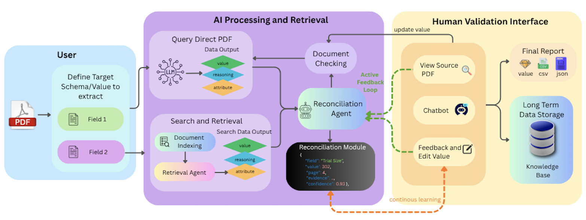
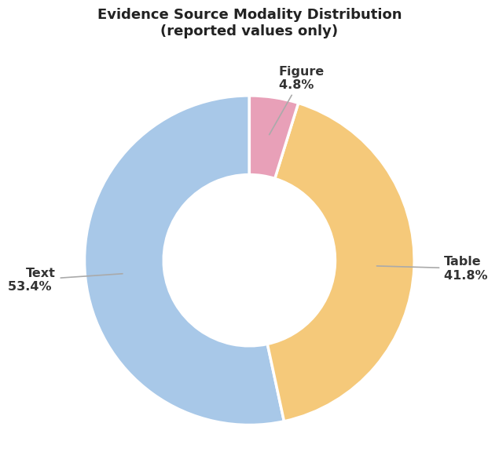
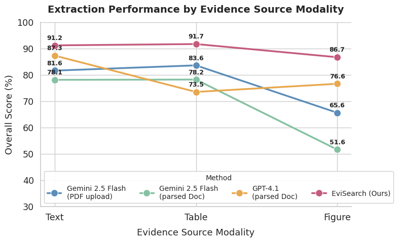
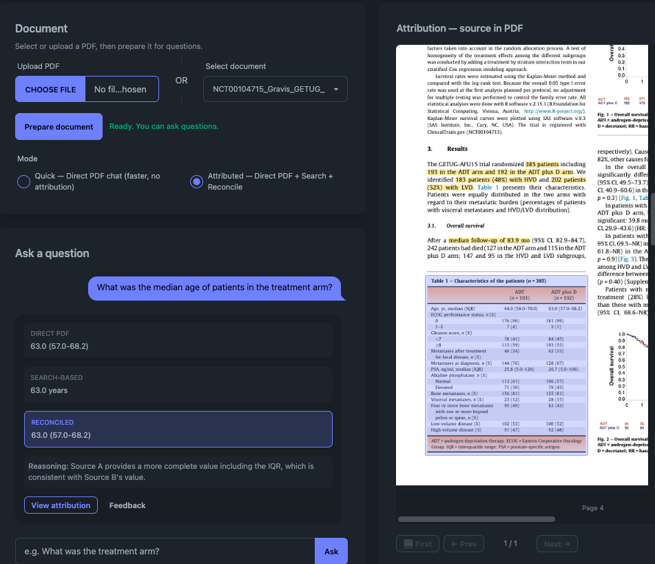

53.4%
of reported evidence in the benchmark comes from narrative text rather than cleanly structured fields.
ACL Demo 2026 · Project Page
Systematic reviews depend on evidence that is not just extracted, but auditable. EviSearch turns clinical trial PDFs into structured evidence tables by pairing direct PDF reasoning, retrieval-guided search, automated reconciliation, and a review interface built for human validation.
The public paper URL will be added once the release is live.
Reading Note
Trial evidence is scattered across prose, tables, figure captions, and visual plots. Some fields require document-level judgment, while others depend on finding the exact table cell or chart label that supports a reported value. That makes naive parsed-text extraction brittle, especially when downstream decisions depend on trustworthy evidence.
EviSearch is designed around that reality. It combines a direct PDF query agent with a retrieval-guided search agent, then reconciles disagreements through page-level verification. The final output is not just a table of answers, but an auditable record that a clinician or reviewer can inspect and revise.
Architecture
Users specify the schema or values to extract, the system runs parallel evidence gathering and reconciliation, and the review interface exposes source-grounded outputs for final validation.

Results


53.4%
of reported evidence in the benchmark comes from narrative text rather than cleanly structured fields.
41.8%
still relies on tables, which means robust extraction cannot ignore document structure.
86.7
overall score on figure-sourced evidence for EviSearch, outperforming the compared baselines shown in the chart.
Interface
Reviewers can inspect extracted values, compare answers from different extraction paths, open the attributed source region in the PDF, and correct outputs with feedback that can later support model improvement.

Artifacts
This page is meant to work like a compact research note: a quick route into the live system, the demo video, and the main figures that explain why the approach matters.